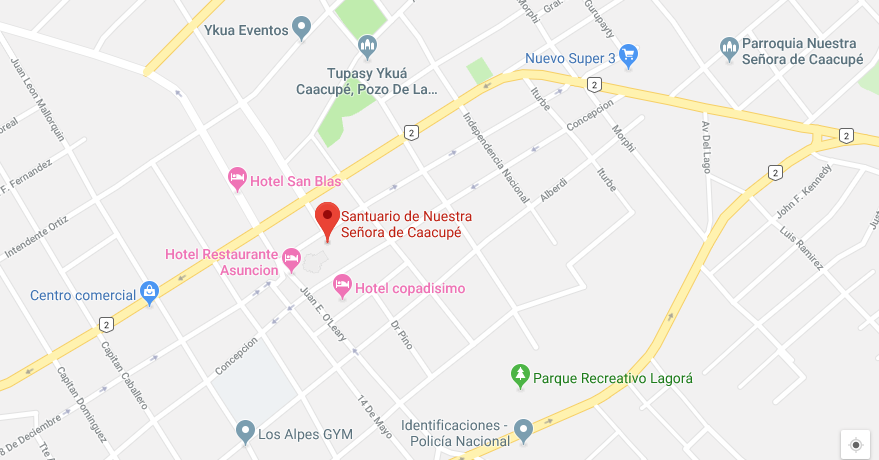
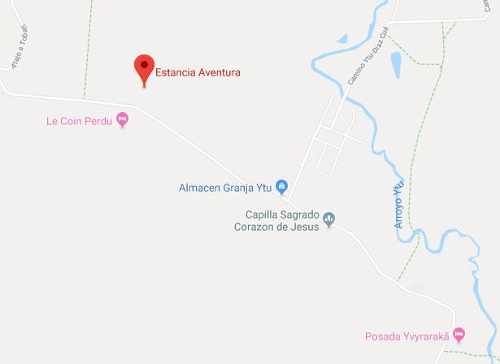
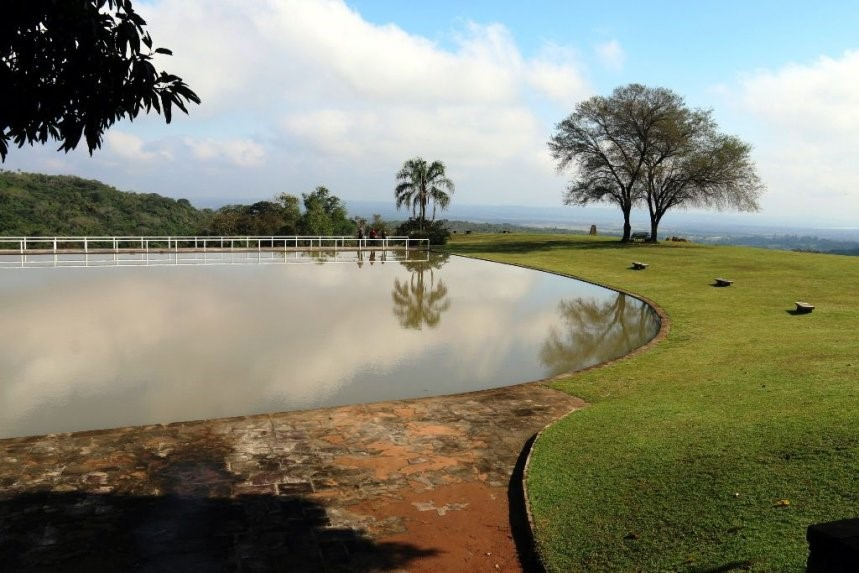
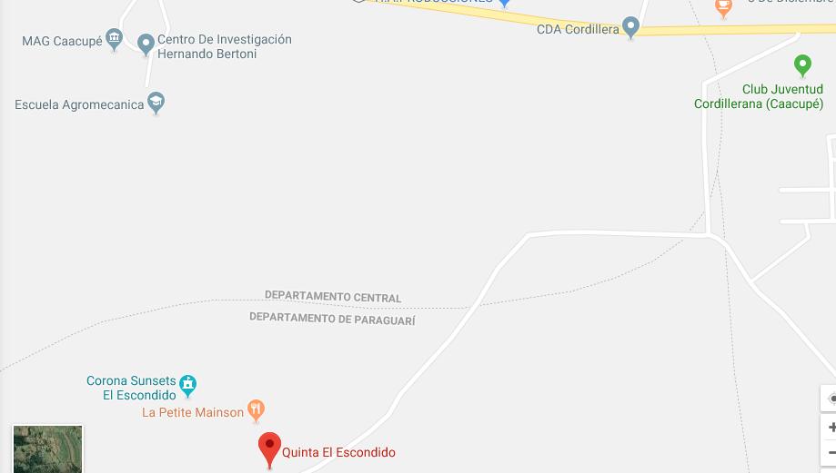
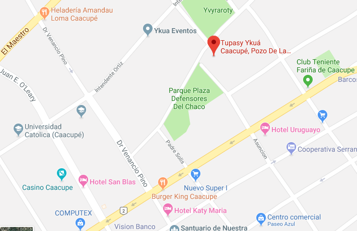

El santuario de la Virgen de Caacupé es una basílica católica de Paraguay que fue inaugurada el 8 de diciembre de 1765 y que se ha convertido en un lugar de peregrinación de numerosos creyentes
En 1883 se reconstruyo el templo mirando al S.O.; en 1885 durante la presidencia del Gral. Bernardino Caballero se completó la torre, el frente y otros detalles de la morada de la Virgen. En la Guerra Grande era lugar de recogimiento y de hospital; durante la guerra con Bolivia (1932-35) era como el Altar de la Patria. Periodistas, historiadores, poetas y literarios, escribieron y cantaron a la Virgen y a su sagrada morada.
Fue precisamente en la Guerra del Chaco que creció y llego a su cúspide la fe popular en la Virgencita Azul. Las madres, las novias e hijas y los mismos combatientes, pusieron los ojos en Ella con la fe puesta para la salvación de la Patria.
La imagen inauguro la historia de Caacupé
Un indio cristiano, que hacía de escultor en la comunidad, se interna mañana en la selva. Estando en la selva, sintió la cercana persecución de unos indios mbaya, enemigos de los guaraníes por su conversión al cristianismo. Se sintió perdido. La muerte se le venía encima.
En esta angustiosa situación se acordó de la Santísima Virgen Inmaculada y le formuló una promesa. Guarecido detrás de un árbol, le prometió que, de salvarle de esa persecución, le haría una imagen.
Los salvajes llegaron, pasaron y se perdieron en la selva. De este árbol el Indio José talló con afectuosa gratitud la imagen de la Virgen. Así cumplió su promesa.
Esculpió finalmente dos imágenes: una más grande destinada a la Iglesia de Tobatí y otra más pequeña para la devoción familiar. Esta imagen Sería la misma que se encuentra en el camarín del Santuario de Caacupé.
Breve historia de la construcción del santuario
En los albores del 1600 surgió la devoción a la Virgen de Caacupé en esta región Cordillerana, Francisco de Asís.
En 1770 se construye una Iglesia en el sitio donado por una devota y benemérita dama, Juana Curtido de Gracia.
En 1883 es edificada una Iglesia de piedras y ladrillos por el Cura Párroco de entonces, Padre Bernardino Sandoval.
A este templo se lo recuerda como el "Tupao Tuya", (Iglesia Antigua).
También comienzan de nuevo las peregrinaciones, que por varios años no se realizaban, durante y después de la guerra grande (1865-1878).
En 1945 comenzó la obra del actual Santuario siendo Arzobispo de Asunción, Monseñor Juan Sinforiano Bogarín y cura Párroco de Caacupé, el Padre Juan Ayala Solís.
El Plano fue diseñado por el Arquitecto Miguel Ángel Alfaro.
Continuaron la construcción Monseñor Ismael Rolón S. y Monseñor Demetrio Aquino.
El 18 de mayo de 1988 bendijo el nuevo Santuario el Papa Juan Pablo ll durante su visita pastoral al Paraguay:
La dedicación de la Catedral - Santuario se llévó a cabo el 18 de mayo de 2006, siendo Obispo Monseñor Claudio Giménez M. (P. Marciano Toledo Historiador).
Imagenes

Datos del lugar
- Juan E. O`Leary esq. Concepción
- +595.511.242355
- santuariodecaacupe@hotmail.com
- http://www.santuariovirgendecaacupe.com/
Servicios disponibles
- Acceso libre
- Baño
- Mirador
Ubicación
La Estancia Aventura los aguarda con verdadera hospitalidad estanciera; vacaciones a caballo cerca de una extensa serranía, a minutos de Caacupé. El establecimiento ofrece naturaleza pura con palmeras y sol, además de la cortesía y gran hospitalidad de sus propietarios.
Montar a caballo, nadar, jugar tenis, aventura, confort y relax en una atmósfera cordial y familiar, todo esto y mucho más lo espera en este lugar. El número de huéspedes es siempre reducido para poder mantener una atmósfera agradable y familiar en la Estancia.
Además, cuenta con un menú exquisito y variado, donde la dueña se destaca por sus extensos conocimientos en cocina europea y se complementa con especialidades paraguayas. La mayoría de los ingredientes de las comidas provienen de la producción propia de la estancia, aprovechando sus cultivos y animales, o bien son adquiridos de los productores vecinos de manera a realizar un trabajo de apoyo recíproco y beneficio en común.

Datos del lugar
- A 6300mts. de Ruta II, KM 7,5 de Caacupé (Ytu)
- +595.981.441804.
- estanciaaventura@hotmail.com
- http://www.estancia-aventura.com/
Servicios disponibles
- Acceso pago
- Acondicionador de aire
- Baños
- Desayuno
- Duchas
- Estacionamiento
- Habitaciones
- Paseo a caballo o sulky
- Restaurante
Ubicación

La Posada El Escondido comenzó siendo un espacio para eventos familiares y sociales, pero hoy en día se convirtió en un complejo y posada turística. Con una vista privilegiada y envidiable de la serranía que se encuentra detrás de Areguá así como del Lago Azul de Ypacaraí, este sitio no sólo ofrece su panorámica sino también otros servicios ideales para pasar en familia o con amigos.
Montar a caballo, nadar, jugar tenis, aventura, confort y relax en una atmósfera cordial y familiar, todo esto y mucho más lo espera en este lugar. El número de huéspedes es siempre reducido para poder mantener una atmósfera agradable y familiar en la Estancia.
Zonas para camping, habitaciones, una piscina con playa donde también podrás realizar canotaje, una tirolesa de más de 100 metros, rappel, canchas de fútbol, senderos, miradores, bancos para descansar bajo la sombra de los árboles, en fin, es ideal para el escape con los amigos o la familia.
Irónicamente con respecto al nombre y aquí nada se esconde con la vista desde su altura. Animáte a dejarte seducir por otro lugar espléndido que ofrece Cordillera
Datos del lugar
- 1,9 KM desde Ruta 2, KM 50½
- +595.976.992672
- http://www.facebook.com/ElescondidoCaacupe/
- http://guiadecaacupe.com.py/linda-vista-el-escondido-caacupe/
Servicios disponibles
- Acceso libre
- Baño
- Cancha de Futbol
- Ecoaventura
- Estacionamiento
- Habitaciones
- Kayaks/Canoas/Botes
- Mirador
- Piscina
- Zona de Camping
Ubicación
Pozo de la virgen (Tupasy Ykua). Ubicado a cuatro cuadras del Santuario de la Virgen. En actas de la comuna local, el Pozo de la Virgen es mencionado por primera vez en setiembre de" 1900. El Pozo de la Virgen, desde siempre proveyó y privilegió con el fluir de sus riquísimas y abundantes aguas a la comunidad caacupeña especialmente en época de sequía cuando los pozos se secaban. Hoy día es sitio obligado para el peregrinante nacional y extranjero que llega junto a la Virgen en el pozo consagrado por ella misma. (Pedro Artemio Ruíz- Historiador).
Quien viene a Caacupé, tiene que llevar el agua del pozo de la Virgen (Tupãsy Ykuá). El templo es la réplica de la antigua Iglesia, el Tupaõ Tuja. El peregrino que llega a Caacupé junto a la Madre, irresistiblemente va al pozo para completar su promesa. Dentro se encuentra el altar y algunos retablos que reviven el pasado.
Zonas para camping, habitaciones, una piscina con playa donde también podrás realizar canotaje, una tirolesa de más de 100 metros, rappel, canchas de fútbol, senderos, miradores, bancos para descansar bajo la sombra de los árboles, en fin, es ideal para el escape con los amigos o la familia.
 Horario de entrada
Horario de verano
Horario de entrada
Horario de verano
- lunes a viernes: Mañana de 06:30 hs. a 09:00 hs. y Tarde: 19:00 hs.
- Sábados: Mañana: 06:30 hs. y 3:00 hs de la tarde y 17:00hs. 19:00hs
- Domingos: Mañana: 06:00 hs. 07:00 hs. 09:00 hs. 11:00 Tarde: hs. 19:00 hs
- lunes a viernes: Mañana: 06:30 hs. y 09:00 hs. Tarde: 18:00 hs.
- Sábados: Mañana: 06:30 hs. y 09:00 hs. 16:00 hs. Tarde: 18:00 hs.
- Domingos: Mañana: 06:00 hs. Tarde: 07:00 hs. 09:00 hs. 11:00 hs. 16:00 hs. 18:00 hs.
Datos del lugar
- Asunción esq. Avda. Pozo de la Virgen
Servicios disponibles
- Acceso libre
Ubicación

Parque Recreativo Lagorã
Uno de los lugares preferidos por los caacupeños, el Parque Lagorã, fue totalmente reacondicionado para alegría de los lugareños. Se trata de un amplio espacio habilitado hace varios años, donde la gente acude para caminatas diarias, trotes y jugar al fútbol.
Tiene además sanitarios, agua potable y un parque infantil donde los niños puedan jugar mientras sus padres se ejercitan; pero la situación cambió con la incorporación de mejoras, realizadas por la Gobernación de Cordillera.
La inversión es de alrededor de G. 600 millones, que contempla la construcción de sanitarios sexados y uno incluso para personas con discapacidades, duchas e instalaciones eléctricas.
Además, ya se dispone en el parque de un pozo artesiano, y un pequeño parque infantil con hamacas, toboganes y otros atractivos.
A esto se suma el reforzamiento de las instalaciones lumínicas, así como un tramo empedrado de 120 metros de largo con 6,20 m de ancho.

Datos del lugar
- Ruta 2 variante Mcal. Felix Estigarribia
Servicios disponibles
- Acceso libre
- Baños
- Cancha de futbol y rugby
- Parque infantil
- Gimnasio al aire libre
- Sendero
Ubicación
Caacupe. Posee área recreativa ofrece alojamiento, cocina, mesa de billar y ping pong, gimnasio, piscina, cancha, además de un mini bus de traslado para los huéspedes. Cuenta con 2 habitaciones con 9 camas. El costo del hospedaje es G. 90.000 por persona, incluido desayuno. Además, el bello paisaje que la rodea es ideal para un escape de fin de semana. Área de camping G. 20.000 por persona. Propiedad de José Enciso Britos, situada en el barrio Azcurra, camino a Pirayú. Tel. 0981.735-731 o al 0984148070 con María Rufina Machuca.


Fútbol de salón

Gimnasio del lugar

Estacionamiento

Manantial